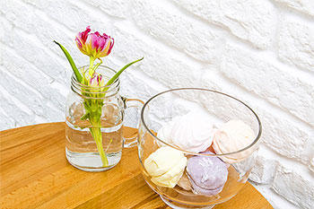

Возможно, вы не догадываетесь, что идеальным для вас стилем в интерьере является минимализм. Он для тех, кому не по душе разнообразные «завитушки» в виде резьбы по дереву, пышной лепнины и витражей. Он так же понравится любителям лаконичных форм, однотонной отделки и выбора предметов в доме только по их функциональному назначению. Минимализм относится к достаточно популярному стилю оформления интерьеров, получив свое название от латинского minimus, то есть «наименьший». Само слово уже отражает главную особенность стиля – простоту и лаконичность.
Общая характеристика минимализма
Характерными чертами этого стиля в интерьере являются:
- Отсутствует декор, узоры, рисунки, орнаменты и пр;
- Мебель и аксессуары в самом необходимом количестве и по их прямому назначению;
- Простые лаконичные формы, прямые линии, отсутствие ненужных изгибов;
- Монохромный интерьер в сером, черном или белом тонах;
- Возможно отсутствие отделки стен;
- Скрытое или естественное освещение, отсутствие люстр и торшеров;
- Использование текстиля допустимо лишь на кровати в спальне.
Получается не очень радостная картина. Представляется, что невозможно жить практически в пустом помещении. Да еще без декоративных элементов. Однако даже дизайнеры советуют при оформлении в стиле минимализма обходиться без крайностей. Это направление дизайна имеет свои привлекательные стороны, которым можно придать домашний уют.
Однообразие цвета не обязательно
Ограничение белым, черным и серым цветом не означает отказа от их множества оттенков. Например, светло-серый тон бывает очень уютным и теплым. При желании оживить этот интерьер можно выбрать один из цветов: синий, зеленый, красный, допустим желтый. Но этого цвета должно быть немного: можно ограничиться яркой деталью либо предметом мебели. Во всяком случае, необходимо яркий цвет разбавить таким же спокойным бело-серым тоном.
Для минимализма характерно использование контрастных сочетаний:
- белого с черным;
- коричневого с бежевым;
- синего со светло-голубым.
Особенный эффект в таком интерьере получается от темной мебели на фоне нейтральных, светлых стен. В минимализме приветствуется использование камня и натурального дерева. Поэтому в интерьере уместна древесина всех оттенков.
Стены и полы в дизайне минимализма
Несмотря на требования минимальной отделки, стены можно оштукатурить и покрасить. Под подкраску допустимо выбрать обои без рисунка и выкрасить в желаемый тон. Минимализм отвергает лепнину, а также карнизы и колонны, характерные для классики. Арки тоже не приветствуются – этому стилю лучше подходят прямые оконные и дверные проемы.
Что касается напольного покрытия, то минималистический интерьер будет идеально смотреться с наливным полом или однотонным ковролином без узоров. Благодаря мягкому ковролину смягчается унылость ничем не оформленных стен. Функциональность и долговечность наливного пола обеспечивают ему растущую популярность.
Интерьер в минимализме допускает использование ламината и линолеума, но без выразительного рисунка. Лучше всего с этим стилем гармонирует приличная имитация дерева или дощатого пола. Зато художественный паркет будет чересчур изысканным для минимализма. Лучше всего он смотрится в доме, оформленном в классическом стиле.
Больше пространства и меньше декора
Поскольку минимализм требует отказа от лишних декоративных элементов, то потолки не должны иметь никаких украшений. Освещение, как правило, встроенное. Для этого светильники прячут в интерьере. Так они не привлекают внимание.
Одним из требований минималистического стиля в интерьере дома или квартиры служит открытость пространства. Поэтому имеет смысл объединить несколько комнат. Для создания зон в таком интерьере используются стеклянные перегородки и разные отделочные материалы. Из-за отсутствия элементов декора очень важно тщательно подходить к качеству отделки. Обработка камня и дерева должна быть идеальной, а стены должны быть безупречно гладкими.
Мебель под влиянием японского минимализма
В интерьере минималистического стиля мебели немного. Вещи хранятся во встроенных шкафах с фасадами под отделку и цвет стен. Для достижения главного принципа этого стиля, «многое в малом», мебель берет на себя максимум функций. Вещи хранятся под кроватью в ящиках и скрытых диванных нишах. Бар помещается в обеденном столе, раскладывающемся в случае гостей.
Простота форм мебели в минимализме предполагает наличие прямых углов, деревянных подлокотников и отсутствие плавных изгибов и пластических линий — это прямоугольные диванные подушки и кубические кресла. Цвет обивки должен контрастировать с цветом стен и может быть однотонным, светлым или темным. Мебель в стиле минимализма обычно более низкая: это результат влияния японского стиля — очень популярного направления минимализма. Такой интерьер гармонично сочетается со стеклянными полками и стеллажами, зеркальными дверцами, встроенными шкафами и низкими журнальными столиками.
минимализм в Алматы
Источник: decorpic.ru